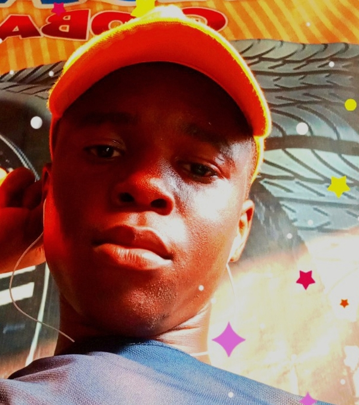

Africa's forgotten folktales, brought back to life with AI
XandyCore
by Francis Chinonso (Xandy) · Calabar, Nigeria
About
Francis Chinonso Ikedinobi, known online as Xandy.
A Nigerian content creator from Calabar, Cross River State, and a chemistry student at the University of Calabar.
In October 2026 he launched XandyCore, a channel of AI-animated retellings of rare African legends told episode by episode, from the Ijaw Ozidi Saga to the Efik legend of Sikan and the birth of the Ekpe society.
He also makes Naija comedy shorts and video edits.

Series so far
Legends from across the continent, one part at a time.
The Ozidi Saga
Ijaw epic, Niger Delta
6 parts Complete
Emere, the Child of Two Worlds
Yoruba
In progress
Sikan and the Leopard Voice
Efik, Cross River
4 parts Complete
Kintu and Nambi
Buganda, Uganda
Coming next
Latest episodes
The Sikan finale is out now.
| Episode | YouTube | |
|---|---|---|
| Sikan and the Leopard Voice – Part 4 Finale | Watch on YouTube | Watch on Facebook |
| Sikan – Part 3 | Watch on YouTube | — |
Find Xandy
The official profiles.
Press & contact